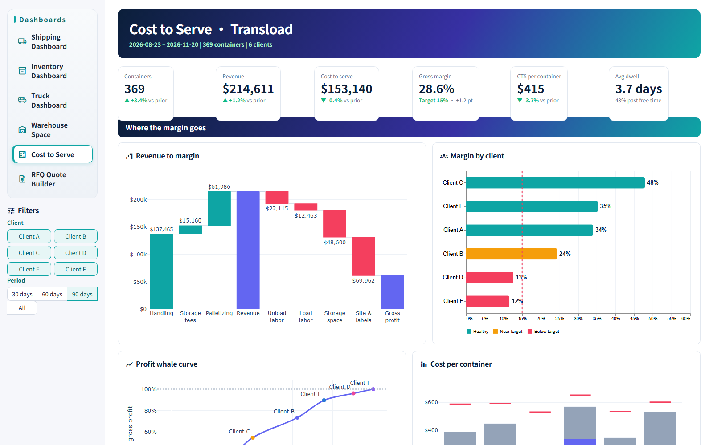

Cost to Serve · Transload
Container-level revenue and cost: labor, storage, site and labels. Shows client margin against a 15% target, the profit whale curve, how dwell days erode margin, and a pricing what-if for fees, free time and labor rate.
Open dashboard →